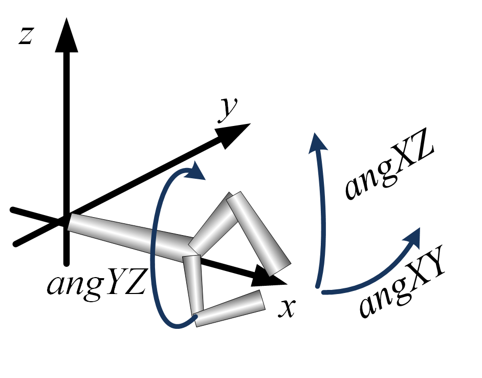

- All Known Implementing Classes:
Crane,Lift,Lift2,ManipulatorModel,ManipulatorWith3DOFGripper,RedundantArm,SimpleArm,SimpleArm2,SimpleArmLinear,Tripod,TripodArm
public interface Manipulator
Note that the gripper rotation is defined in the ordering xz – yz – xy. This is not the ordering for common rotation function but the 'reverse' ones e.g.
Matrix.rotationMatrix3DReverse(double,double,double,double,double,double).
The gripper direction (i.e. the vector from the manipulator's gripper connector to the center of gripping area is in x-direction, if the gripper is not rotated:
-
Method Summary
Modifier and Type Method Description booleancanWristReach(double x, double y, double z, double gripperAngXY, double gripperAngXZ, double gripperAngYZ)Check, if the given configuration can be reached.double[]currentWristPosition()Get the current wrist position in local coordinates.voiddefineDirectKinematics(DirectKinematics directKinematics)Define the direct kinematics instance that maps joint values to the target position.voiddefineInverseKinematics(InverseKinematics inverseKinematics)Define the inverse kinematics instance in order to perfom respective computations without actually move a servo or motor.DirectKinematicsdirectKinematics()Get the direct kinematics instance that maps joint values to the target position.AxisRotationPassivegetAxisRotationPassive(int id)Get a specific passive element - the application developer must know which ID means which passive element.java.lang.StringgetDescription()The manipulator's description.FullRotationPassivegetFullRotationPassive(int id)Get a specific passive element - the application developer must know which ID means which passive element.LinearMotorgetLinearMotor(int id)Get a specific linear motor - the application developer must know which ID means which motor - usually they are ordered from body to gripper.
Note: this method is also used to access the gripper's motors as the manipulator is the container for all servos and motors.LinearPassivegetLinearPassive(int id)Get a specific passive element - the application developer must know which ID means which passive element.Motor[]getMotors()Get all motor objects of the joints.ServogetServo(int id)Get a specific servo - the application developer must know which ID means which servo - usually they are ordered from body to gripper.
Note: this method is also used to access the gripper's servos as the manipulator is the container for all servos and motors.booleanintermediateTargetNearlyReached()Is the manipulator (including gripper) nearly at target?InverseKinematicsinverseKinematics()Get the inverse kinematics instance in order to perfom respective computations without actually move a servo or motor.booleanisCurrentlyMoving()Is the manipulator (including gripper) currently moving?Joint[]jointSpace()Get the joint space, i.e. the list of controllable motors.double[]jointValues()Get the list of current values (e.g. servo angle or motor length) of all controllable motors.ManipulatorResultlastManipulatorResult()Get the lastManipulatorResult.double[]localToWorld(double[] pos)Convert a robot-local position to a position in world coordinates.ManipulatorResultmoveWristLinearTo(double x, double y, double z, double gripperAngXY, double gripperAngXZ, double gripperAngYZ, double relativeSpeed, double segmentLength)Move the wrist to a given position.ManipulatorResultmoveWristLinearToWithConstantSpeed(double x, double y, double z, double gripperAngXY, double gripperAngXZ, double gripperAngYZ, double absoluteSpeed, double relativeSpeed, double segmentLength)Move the wrist to a given position.ManipulatorResultmoveWristTo(double x, double y, double z, double gripperAngXY, double gripperAngXZ, double gripperAngYZ, int speedIndicator, double absoluteSpeed, double relativeSpeed)Move the wrist to a given position.booleanongoingMovement()Is a complex movement currently running?RotoTranslationrotoTranslationWorld()Get the manipulator's origin as roto-translation.voidwaitCurrentMovementCompleted()Wait until all movement (including gripper) has been completed.voidwaitIntermediateTargetNearlyReached()Wait until movement (including gripper) nearly reached the target?voidwaitOngoingMovementCompleted()Wait until a complex movement has been terminated.doubleworldOrientation()Get the world orientation.double[]worldPosition()Get the world position.double[]worldToLocal(double[] pos)Convert a position in world coordinates to a robot-local position.
-
Method Details
-
getDescription
java.lang.String getDescription()The manipulator's description.- Returns:
- description
-
rotoTranslationWorld
RotoTranslation rotoTranslationWorld()Get the manipulator's origin as roto-translation.- Returns:
- roto-translation instance
-
worldPosition
double[] worldPosition()Get the world position.- Returns:
- array of 3 with x, y, z (z is always 0)
-
worldOrientation
double worldOrientation()Get the world orientation.- Returns:
- orientation in radians (0: x-axis, positive go counter-clockwise)
-
localToWorld
double[] localToWorld(double[] pos)Convert a robot-local position to a position in world coordinates.- Parameters:
pos- robot-local position- Returns:
- position in world coordinates
-
worldToLocal
double[] worldToLocal(double[] pos)Convert a position in world coordinates to a robot-local position.- Parameters:
pos- position in world coordinates- Returns:
- robot-local position
-
jointSpace
Joint[] jointSpace()Get the joint space, i.e. the list of controllable motors.- Returns:
- array of joints
-
jointValues
double[] jointValues()Get the list of current values (e.g. servo angle or motor length) of all controllable motors.- Returns:
- current joint values
-
getMotors
Motor[] getMotors()Get all motor objects of the joints.- Returns:
- motors
-
getServo
Get a specific servo - the application developer must know which ID means which servo - usually they are ordered from body to gripper.
Note: this method is also used to access the gripper's servos as the manipulator is the container for all servos and motors.- Parameters:
id- servo id- Returns:
- servo instance
-
getLinearMotor
Get a specific linear motor - the application developer must know which ID means which motor - usually they are ordered from body to gripper.
Note: this method is also used to access the gripper's motors as the manipulator is the container for all servos and motors.- Parameters:
id- motor id- Returns:
- motor instance
-
getFullRotationPassive
Get a specific passive element - the application developer must know which ID means which passive element.- Parameters:
id- id- Returns:
- passive element
-
getAxisRotationPassive
Get a specific passive element - the application developer must know which ID means which passive element.- Parameters:
id- id- Returns:
- passive element
-
getLinearPassive
Get a specific passive element - the application developer must know which ID means which passive element.- Parameters:
id- id- Returns:
- passive element
-
currentWristPosition
double[] currentWristPosition()Get the current wrist position in local coordinates. The wrist is the nearest component to the gripper.- Returns:
- array of 3 with x, y, z
-
canWristReach
boolean canWristReach(double x, double y, double z, double gripperAngXY, double gripperAngXZ, double gripperAngYZ)Check, if the given configuration can be reached.- Parameters:
x- local coordinate x (cm)y- local coordinate y (cm)z- local coordinate z (cm)gripperAngXY- angle of the gripper segment in the x-y plane (yaw orientation, applied last); may be NaN, if the gripper angle should not changegripperAngXZ- angle of the gripper segment in the x-z plane (gripper angle to horizon, applied second); may be NaN, if the gripper angle should not changegripperAngYZ- angle of the gripper segment in the y-z plane (gripper axis-rotation, applied first); may be NaN, if the gripper angle should not change- Returns:
- true if the wrist can reach this configuration
-
moveWristTo
ManipulatorResult moveWristTo(double x, double y, double z, double gripperAngXY, double gripperAngXZ, double gripperAngYZ, int speedIndicator, double absoluteSpeed, double relativeSpeed)Move the wrist to a given position. The wrist is the nearest component to the gripper.
The movement follows the interpolation of the involved servos from start to target angle. This means, the result trajectory of the wrist is not linear.
The movement is initiated, but the command immediately returns, i.e. the movement is performed from now.- Parameters:
x- local coordinate x (cm)y- local coordinate y (cm)z- local coordinate z (cm)gripperAngXY- angle of the gripper segment in the x-y plane (yaw orientation, applied last); may be NaN, if the gripper angle should not changegripperAngXZ- angle of the gripper segment in the x-z plane (gripper angle to horizon, applied second); may be NaN, if the gripper angle should not changegripperAngYZ- angle of the gripper segment in the y-z plane (gripper axis-rotation, applied first); may be NaN, if the gripper angle should not changespeedIndicator- speed indicator,- 0: all motors with default speed
- 1: all motors should terminate at the same time, whereas the motor that makes the largest move (i.e. those that moves quickest) should run with a relative speed to the maximum (see parameter relativeSpeed)
- 2: all motors should terminate at the same time, where as the gripper moves with predefined speed (see parameter absoluteSpeed); limit the given speed by the maximum speed resulting by motor limits. Note: the parameter relativeSpeed is also used here to compute the minimum moving time for the gripper servos.
absoluteSpeed- if speedIndicator==2 absolute gripper speed in cm/srelativeSpeed- if speedIndicator==1 relative speed to the maximum for the motor with longest runtime, also used if speedIndicator==2 to define the speed of the gripper servos- Returns:
- result of the command
-
moveWristLinearTo
ManipulatorResult moveWristLinearTo(double x, double y, double z, double gripperAngXY, double gripperAngXZ, double gripperAngYZ, double relativeSpeed, double segmentLength)Move the wrist to a given position. The wrist is the nearest component to the gripper.
Concerning motor speed: the speed is computed according the maximum motor speed. The calles provides a relatitv speed. If e.g. the relativ speed is 0.5, the servo that makes the largest move (i.e. must move quickest) is powered with 50% of the maximum speed.
The movement of the wrist is nearly linear. For this, the linear connection from current to target position is segmented and each segment is moved by
The movement is initiated, but the command immediately returns, i.e. the movement is performed from now.moveWristTo(double, double, double,double,double,double,int,double,double). Obviously, this is only an approximation of linear movement as inside the segments, the wrist is moved by interpolating servo angles and motor distances. i.e. not linear concerning wrist position.- Parameters:
x- local coordinate x (cm)y- local coordinate y (cm)z- local coordinate z (cm)gripperAngXY- angle of the gripper segment in the x-y plane (yaw orientation, applied last); may be NaN, if the gripper angle should not changegripperAngXZ- angle of the gripper segment in the x-z plane (gripper angle to horizon, applied second); may be NaN, if the gripper angle should not changegripperAngYZ- angle of the gripper segment in the y-z plane (gripper axis-rotation, applied first); may be NaN, if the gripper angle should not changerelativeSpeed- relative speed to the maximum for the motor that makes the largest move (i.e. those that moves quickest)segmentLength- distance in cm that is moved by interpolating servo angles and motor distances, i.e. not linear concerning wrist position.- Returns:
- result of the command
-
moveWristLinearToWithConstantSpeed
ManipulatorResult moveWristLinearToWithConstantSpeed(double x, double y, double z, double gripperAngXY, double gripperAngXZ, double gripperAngYZ, double absoluteSpeed, double relativeSpeed, double segmentLength)Move the wrist to a given position. The wrist is the nearest component to the gripper.
Concerning motor speed: the called defines an absolute gripper speed in cm/s. This methods tries to power all involved motors to hold this speed. Only, if the respective motor speeds would be higher than the maximum motor speed, a lower gripper speed results.
The movement of the wrist is nearly linear. For this, the linear connection from current to target position is segmented and each segment is moved by
The movement is initiated, but the command immediately returns, i.e. the movement is performed from now.moveWristTo(double, double, double,double,double,double,int,double,double). Obviously, this is only an approximation of linear movement as inside the segments, the wrist is moved by interpolating servo angles and motor distances. i.e. not linear concerning wrist position.- Parameters:
x- local coordinate x (cm)y- local coordinate y (cm)z- local coordinate z (cm)gripperAngXY- angle of the gripper segment in the x-y plane (yaw orientation, applied last); may be NaN, if the gripper angle should not changegripperAngXZ- angle of the gripper segment in the x-z plane (gripper angle to horizon, applied second); may be NaN, if the gripper angle should not changegripperAngYZ- angle of the gripper segment in the y-z plane (gripper axis-rotation, applied first); may be NaN, if the gripper angle should not changeabsoluteSpeed- absolute gripper speed in cm/s, may be lower in reality, if the desired speed would exceed the respective motor speedsrelativeSpeed- relative gripper servo speeds (in relation to their maximum) that the gripper servos should run at the maximumsegmentLength- distance in cm that is moved by interpolating servo angles and motor distances, i.e. not linear concerning wrist position.- Returns:
- result of the command
-
lastManipulatorResult
ManipulatorResult lastManipulatorResult()Get the lastManipulatorResult. This is a result of, e.g. callingmoveWristTo(double, double, double,double,double,double,int,double,double). In contast to the respective return values, this method may also return a result that occured in background, after calling the movement method.- Returns:
- result of last movement command
-
ongoingMovement
boolean ongoingMovement()Is a complex movement currently running?- Returns:
- true, if a complex movement currently is running?
-
waitOngoingMovementCompleted
void waitOngoingMovementCompleted()Wait until a complex movement has been terminated. -
isCurrentlyMoving
boolean isCurrentlyMoving()Is the manipulator (including gripper) currently moving? Note: This method is not suitable to check, if a complex movement is still ongoing, as these may occasionally stop (e.g. when intermediate computations take too long). UseongoingMovement()for this.- Returns:
- is moving
-
intermediateTargetNearlyReached
boolean intermediateTargetNearlyReached()Is the manipulator (including gripper) nearly at target? Nearly means, the target will be reached in less than 0.8 seconds. This may not mean that a complex movement has nearly finished, but only the respective servos and motors nearly reached their (intermediate) targets.- Returns:
- target nearly reached?
-
waitCurrentMovementCompleted
void waitCurrentMovementCompleted()Wait until all movement (including gripper) has been completed. Note: This method is not suitable to wait until a complex movement is still ongoing, as these may occasionally stop (e.g. when intermediate computations take too long). UsewaitOngoingMovementCompleted()for this. -
waitIntermediateTargetNearlyReached
void waitIntermediateTargetNearlyReached()Wait until movement (including gripper) nearly reached the target? Nearly means, the target will be reached in less than 0.8 seconds. This may not mean that a complex movement has nearly finished, but only the respective servos and motors nearly reached their (intermediate) targets. -
directKinematics
DirectKinematics directKinematics()Get the direct kinematics instance that maps joint values to the target position.- Returns:
- direct kinematics instance
-
defineDirectKinematics
Define the direct kinematics instance that maps joint values to the target position. This call is required, if the manipulator does not provide such an instance on creation, or if it is disabled by Skill -mandirkin.- Parameters:
directKinematics- direct kinematics instance
-
inverseKinematics
InverseKinematics inverseKinematics()Get the inverse kinematics instance in order to perfom respective computations without actually move a servo or motor.- Returns:
- inverse kinematics instance
-
defineInverseKinematics
Define the inverse kinematics instance in order to perfom respective computations without actually move a servo or motor. This call is required, if the manipulator does not provide such an instance on creation, or if it is disabled by Skill -maninvkin.- Parameters:
inverseKinematics- inverse kinematics instance
-